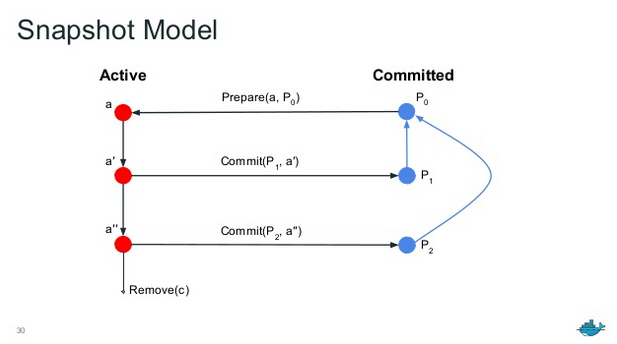

Snapshots
Docker containers, from the beginning, have long been built on a snapshotting methodology known as layers. Layers provide the ability to fork a filesystem, make changes then save the changeset back to a new layer.
Historically, these have been tightly integrated into the Docker daemon as a
component called the graphdriver. The graphdriver allows one to run the
docker daemon on several different operating systems while still maintaining
roughly similar snapshot semantics for committing and distributing changes to
images.
The graphdriver is deeply integrated with the import and export of images,
including managing layer relationships and container runtime filesystems. The
behavior of the graphdriver informs the transport of image formats.
In this document, we propose a more flexible model for managing layers. It focuses on providing an API for the base snapshotting functionality without coupling so tightly to the structure of images and their identification. The minimal API simplifies behavior without sacrificing power. This makes the surface area for driver implementations smaller, ensuring that behavior is more consistent between implementations.
These differ from the concept of the graphdriver in that the Snapshotter has no knowledge of images or containers. Users simply prepare and commit directories. We also avoid the integration between graph drivers and the tar format used to represent the changesets.
The best aspect is that we can get to this model by refactoring the existing graphdrivers, minimizing the need for new code and sprawling tests.
Scope
In the past, the graphdriver component has provided quite a lot of
functionality in Docker. This includes serialization, hashing, unpacking,
packing, mounting.
The Snapshotter will only provide mount-oriented snapshot access with minimal metadata. Serialization, hashing, unpacking, packing and mounting are not included in this design, opting for common implementations between graphdrivers, rather than specialized ones. This is less of a problem for performance since direct access to changesets is provided in the interface.
Architecture
The Snapshotter provides an API for allocating, snapshotting and mounting abstract, layer-based filesystems. The model works by building up sets of directories with parent-child relationships, known as Snapshots.
A Snapshot represents a filesystem state. Every snapshot has a parent, where the empty parent is represented by the empty string. A diff can be taken between a parent and its snapshot to create a classic layer.
Snapshots are best understood by their lifecycle. Active snapshots are always
created with Prepare or View from a Committed snapshot (including the
empty snapshot). Committed snapshots are always created with
Commit from an Active snapshot. Active snapshots never become committed
snapshots and vice versa. All snapshots may be removed.
After mounting an Active snapshot, changes can be made to the snapshot. The act of committing creates a Committed snapshot. The committed snapshot will inherit the parent of the active snapshot. The committed snapshot can then be used as a parent. Active snapshots can never be used as a parent.
The following diagram demonstrates the relationships of snapshots:

In this diagram, you can see that the active snapshot a is created by calling
Prepare with the committed snapshot P0. After modification, a
becomes a' and a committed snapshot P1 is created by calling
Commit. a' can be further modified as a'' and a second committed snapshot
can be created as P2 by calling Commit again. Note here that
P2's parent is P0 and not P1.
Operations
The manifestation of snapshots is facilitated by the Mount object and
user-defined directories used for opaque data storage. When creating a new
active snapshot, the caller provides an identifier called the key. This
operation returns a list of mounts that, if mounted, will have the fully
prepared snapshot at the mounted path. We call this the prepare operation.
Once a snapshot is prepared and mounted, the caller may write new data to the snapshot. Depending on the application, a user may want to capture these changes or not.
For a read-only view of a snapshot, the view operation can be used. Like prepare, view will return a list of mounts that, if mounted, will have the fully prepared snapshot at the mounted path.
If the user wants to keep the changes, the commit operation is employed. The commit operation takes the key identifier, which represents an active snapshot, and a name identifier. A successful result will create a committed snapshot that can be used as the parent of new active snapshots when referenced by the name.
If the user wants to discard the changes in an active snapshot, the remove operation will release any resources associated with the snapshot. The mounts provided by prepare or view should be unmounted before calling this method.
If the user wants to discard committed snapshots, the remove operation can also be used, but any children must be removed before proceeding.
For detailed usage information, see the GoDoc.
Graph metadata
As snapshots are imported into the container system, a "graph" of snapshots and their parents will form. Queries over this graph must be a supported operation.
How snapshots work
To flesh out the Snapshots terminology, we are going to demonstrate the use of the Snapshotter from the perspective of importing layers. We'll use a Go API to represent the process.
Importing a Layer
To import a layer, we simply have the Snapshotter provide a list of mounts to be applied such that our destination will capture a changeset. We start out by getting a path to the layer tar file and creating a temp location to unpack it to:
layerPath, tmpDir := getLayerPath(), mkTmpDir() // just a path to layer tar file.
We start by using a Snapshotter to Prepare a new snapshot transaction, using a key and descending from the empty parent "":
mounts, err := snapshotter.Prepare(key, "")
if err != nil { ... }
We get back a list of mounts from Snapshotter.Prepare, with the key
identifying the active snapshot. Mount this to the temporary location with the
following:
if err := mount.All(mounts, tmpDir); err != nil { ... }
Once the mounts are performed, our temporary location is ready to capture
a diff. In practice, this works similar to a filesystem transaction. The
next step is to unpack the layer. We have a special function unpackLayer
that applies the contents of the layer to target location and calculates the
DiffID of the unpacked layer (this is a requirement for docker
implementation):
layer, err := os.Open(layerPath)
if err != nil { ... }
digest, err := unpackLayer(tmpLocation, layer) // unpack into layer location
if err != nil { ... }
When the above completes, we should have a filesystem the represents the
contents of the layer. Careful implementations should verify that digest
matches the expected DiffID. When completed, we unmount the mounts:
unmount(mounts) // optional, for now
Now that we've verified and unpacked our layer, we commit the active
snapshot to a name. For this example, we are just going to use the layer
digest, but in practice, this will probably be the ChainID:
if err := snapshotter.Commit(digest.String(), key); err != nil { ... }
Now, we have a layer in the Snapshotter that can be accessed with the digest provided during commit. Once you have committed the snapshot, the active snapshot can be removed with the following:
snapshotter.Remove(key)
Importing the Next Layer
Making a layer depend on the above is identical to the process described
above except that the parent is provided as parent when calling
Snapshotter.Prepare, assuming a clean tmpLocation:
mounts, err := snapshotter.Prepare(tmpLocation, parentDigest)
We then mount, apply and commit, as we did above. The new snapshot will be based on the content of the previous one.
Running a Container
To run a container, we simply provide Snapshotter.Prepare the committed image
snapshot as the parent. After mounting, the prepared path can
be used directly as the container's filesystem:
mounts, err := snapshotter.Prepare(containerKey, imageRootFSChainID)
The returned mounts can then be passed directly to the container runtime. If
one would like to create a new image from the filesystem, Snapshotter.Commit
is called:
if err := snapshotter.Commit(newImageSnapshot, containerKey); err != nil { ... }
Alternatively, for most container runs, Snapshotter.Remove will be called to
signal the Snapshotter to abandon the changes.